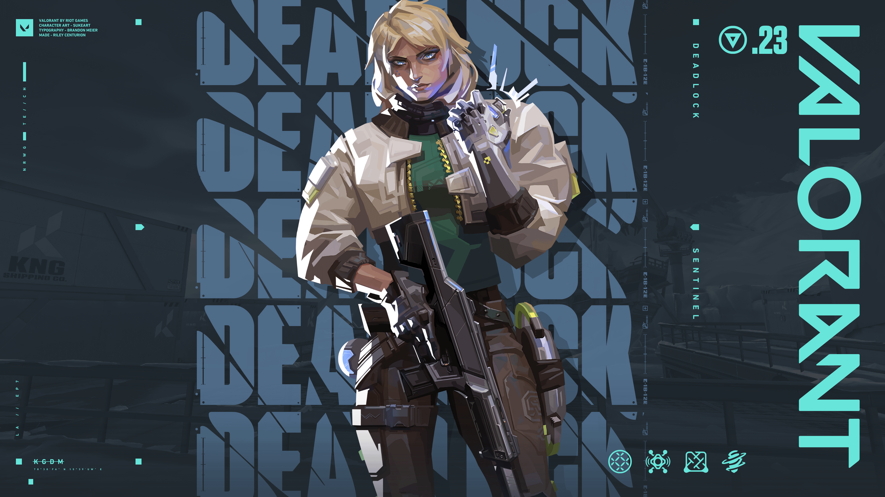
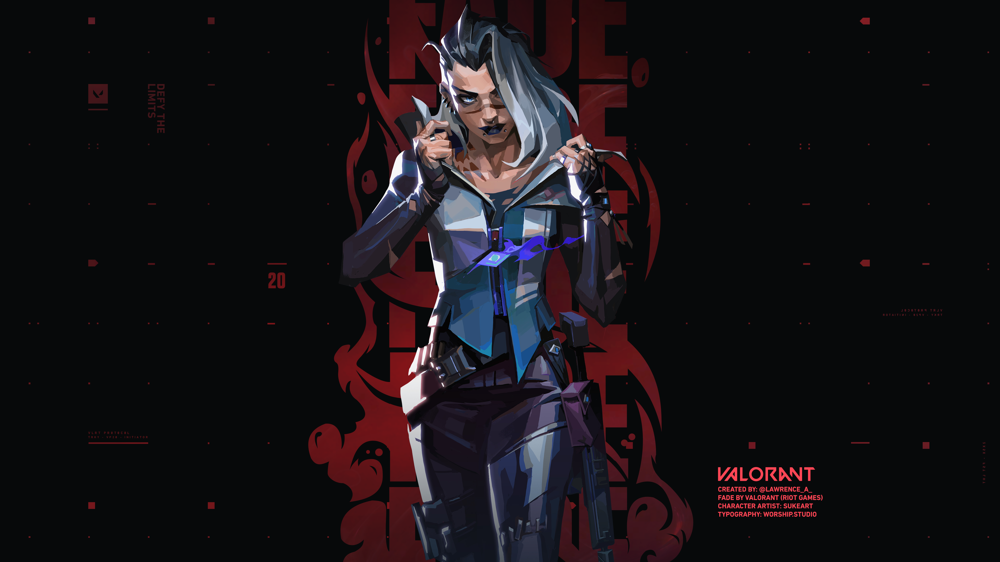
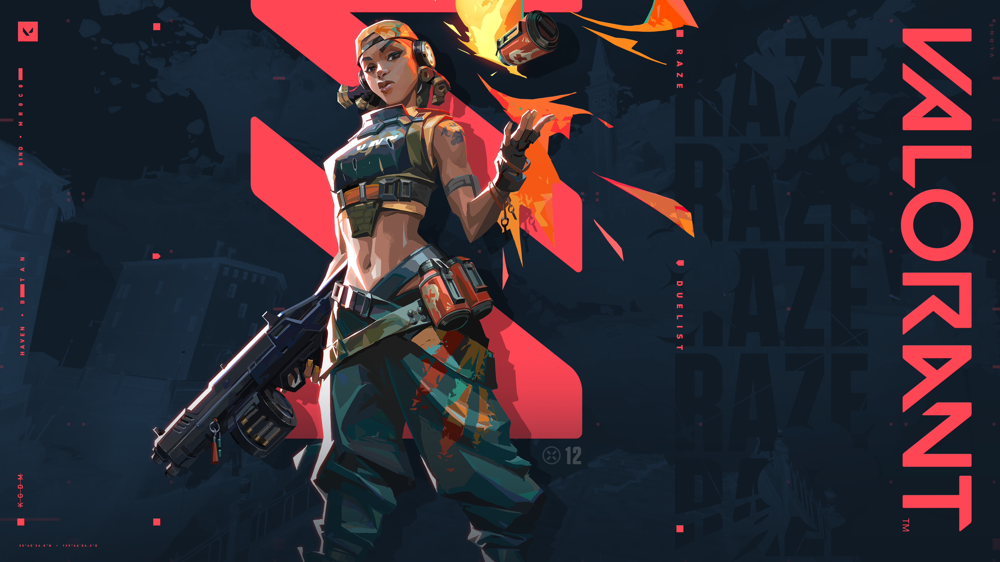
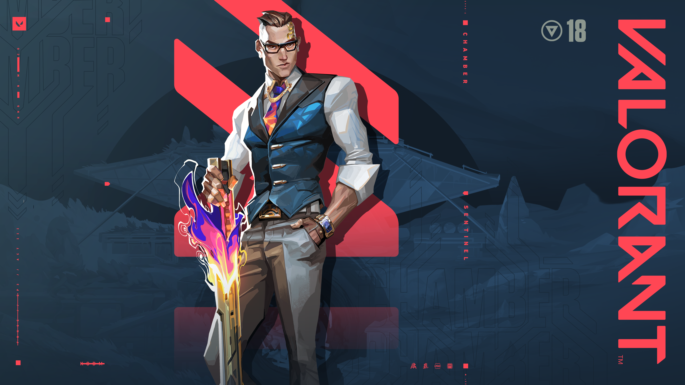
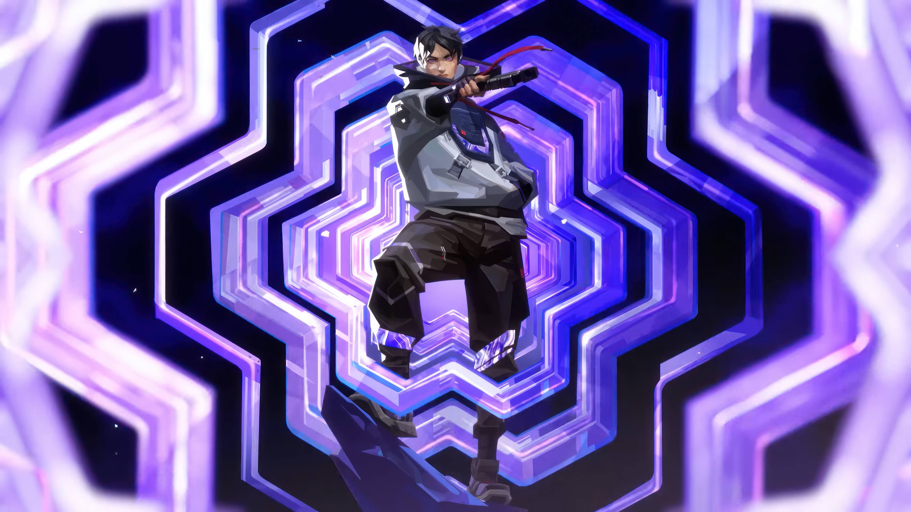
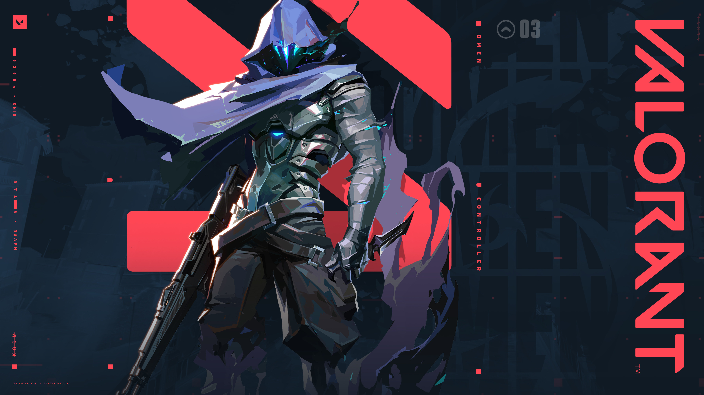
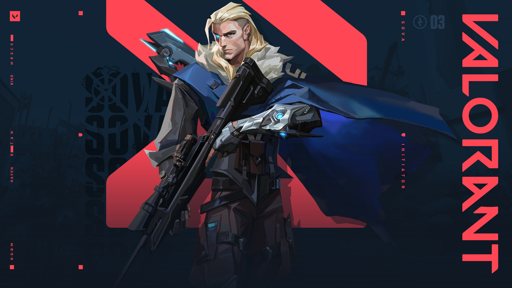

Valorant é um jogo de tiro em primeira pessoa (FPS) tático desenvolvido e publicado pela Riot Games. Lançado em 2020, o jogo combina elementos de jogos de tiro tradicionais com habilidades únicas de personagens, conhecidos como "agentes". Cada agente possui habilidades especiais que podem ser usadas estrategicamente durante as partidas, adicionando uma camada extra de profundidade ao gameplay.
DeadLock é uma agente norueguesa especializada em contenção e defesa. Ela é uma ex-integrante de uma força especial chamada Odin's Eye. Após um acidente envolvendo tecnologia radiante em uma missão, ela se uniu ao Protocolo Valorant. Deadlock usa armadilhas cibernéticas para isolar e neutralizar inimigos, sendo extremamente precisa e impiedosa.

Fade é uma agente turca especializada em rastreamento e controle de multidões. Ela tem a habilidade de invocar criaturas sombrias que podem revelar a posição dos inimigos e criar zonas de medo. Fade é conhecida por sua natureza implacável e sua capacidade de dominar o campo de batalha com suas habilidades sobrenaturais.

Raze é uma agente brasileira especializada em explosivos e combate direto. Ela é conhecida por sua personalidade vibrante e seu amor por causar caos no campo de batalha. Raze utiliza uma variedade de dispositivos explosivos, como granadas e bombas, para desestabilizar os inimigos e controlar áreas estratégicas do mapa.

Chamber é um agente francês especializado em precisão e controle de área. Ele é um ex-agente de elite que utiliza armas personalizadas e habilidades táticas para dominar o campo de batalha. Chamber é conhecido por sua calma e eficiência, sendo capaz de eliminar inimigos com precisão cirúrgica.

Iso é um mercenário chinês com habilidades que manipulam o campo de energia ao seu redor. Antes de entrar para o Protocolo Valorant, ele era um assassino de aluguel altamente eficiente que passou por uma transformação depois de sobreviver a uma emboscada fatal graças a uma explosão de radianita. Agora, ele entra em um “estado de fluxo” durante os combates, tornando-se praticamente imparável.

Omen é uma figura misteriosa que parece ter perdido a memória e parte de sua forma física em algum experimento com radianita. Ele é uma sombra viva, movendo-se silenciosamente pelo campo de batalha, criando escuridão e teletransportando-se para pegar os inimigos desprevenidos. Pouco se sabe sobre sua origem, mas ele guarda rancor de alguém envolvido com seu passado.

Sova é um caçador russo especialista em rastreamento e reconhecimento. Com um olho cibernético e um arco de alta tecnologia, ele nunca perde seu alvo. Sova acredita firmemente na missão do Protocolo Valorant e age com honra e precisão, sempre buscando entender mais sobre os perigos do mundo da radianita e proteger os inocentes.
